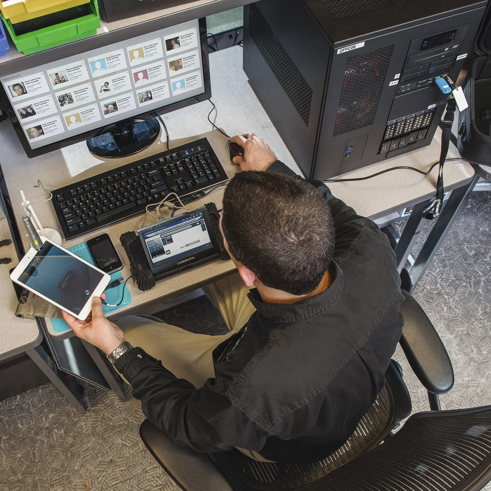
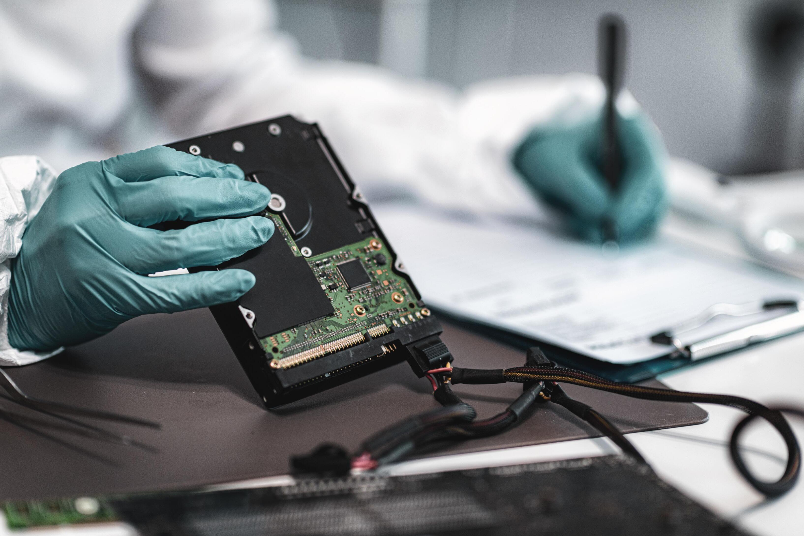

Cibercrimen: Los Rastros Digitales
En la actualidad, no todos los crímenes ocurren en la calle; muchos suceden detrás de un monitor. Aquí es donde entra la informática forense. Así como los criminalistas buscan huellas dactilares físicas, los peritos informáticos rastrean huellas digitales en el ciberespacio.
El peritaje informático implica la extracción y el análisis de datos alojados en dispositivos electrónicos. Los investigadores analizan desde el hardware (discos duros, placas base, chasis de computadoras) hasta la infraestructura de la red (topologías, cableado UTP, routers) para reconstruir los hechos.



Los cibercriminales suelen pensar que pueden borrar su rastro eliminando archivos o formateando dispositivos, pero la recuperación de datos es una ciencia avanzada. Algunos de los delitos que se investigan con esta rama son:
- Robo de identidad y fraudes bancarios.
- Distribución de malware y secuestro de datos (Ransomware).
- Espionaje corporativo y robo de bases de datos.
Para garantizar que la evidencia digital no sea alterada, los peritos utilizan bloqueadores de escritura y realizan "copias bit a bit" (clones exactos) de los discos duros. De esta manera, analizan la copia y mantienen el dispositivo original intacto para el juicio.